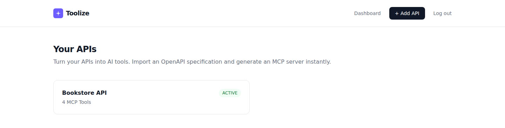
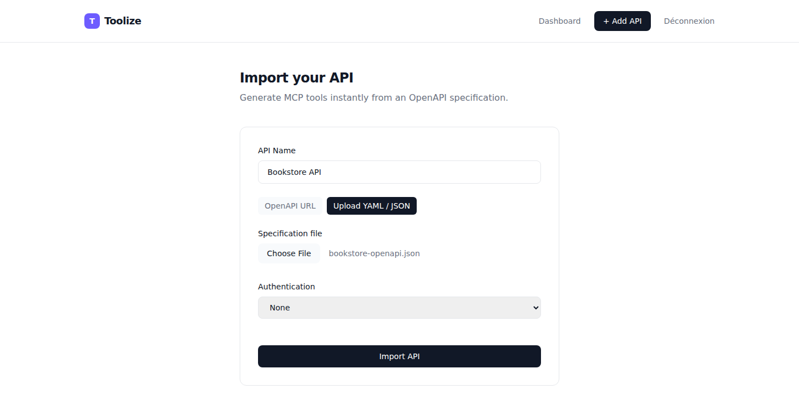
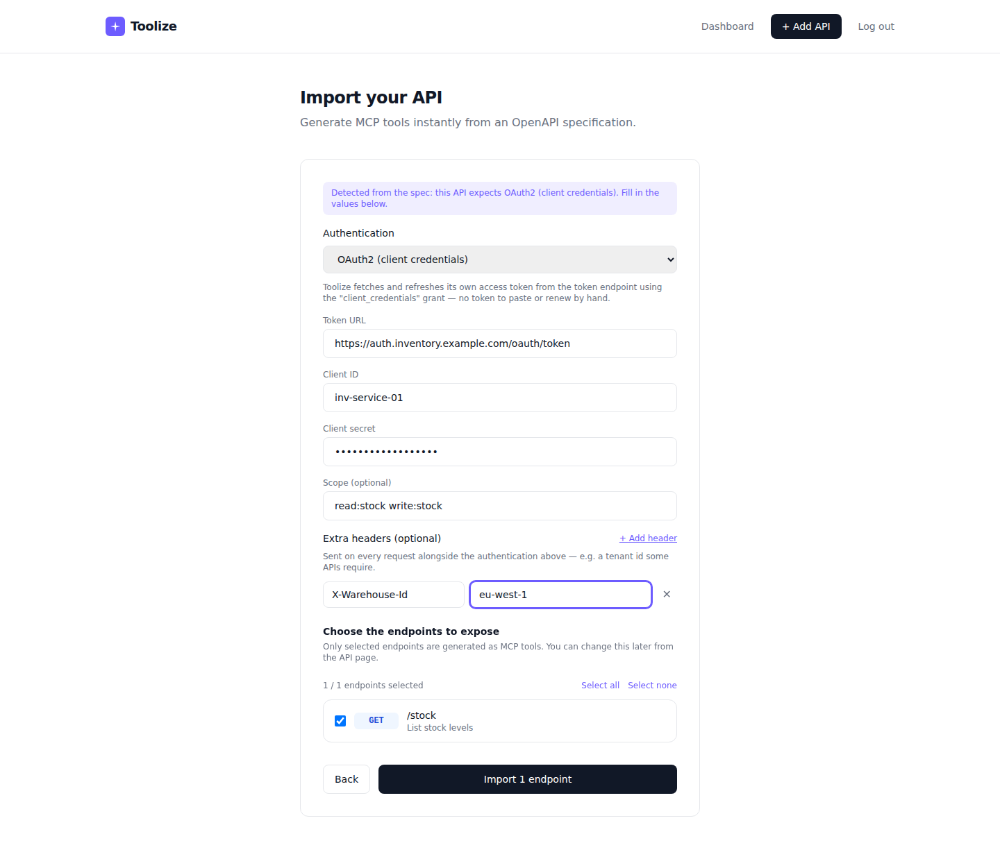
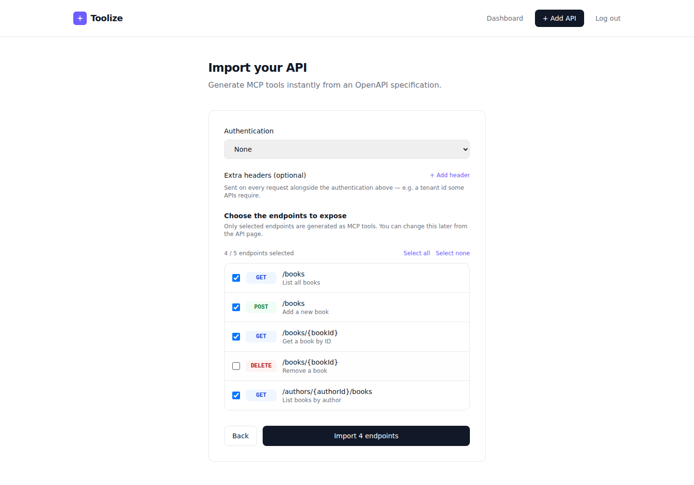
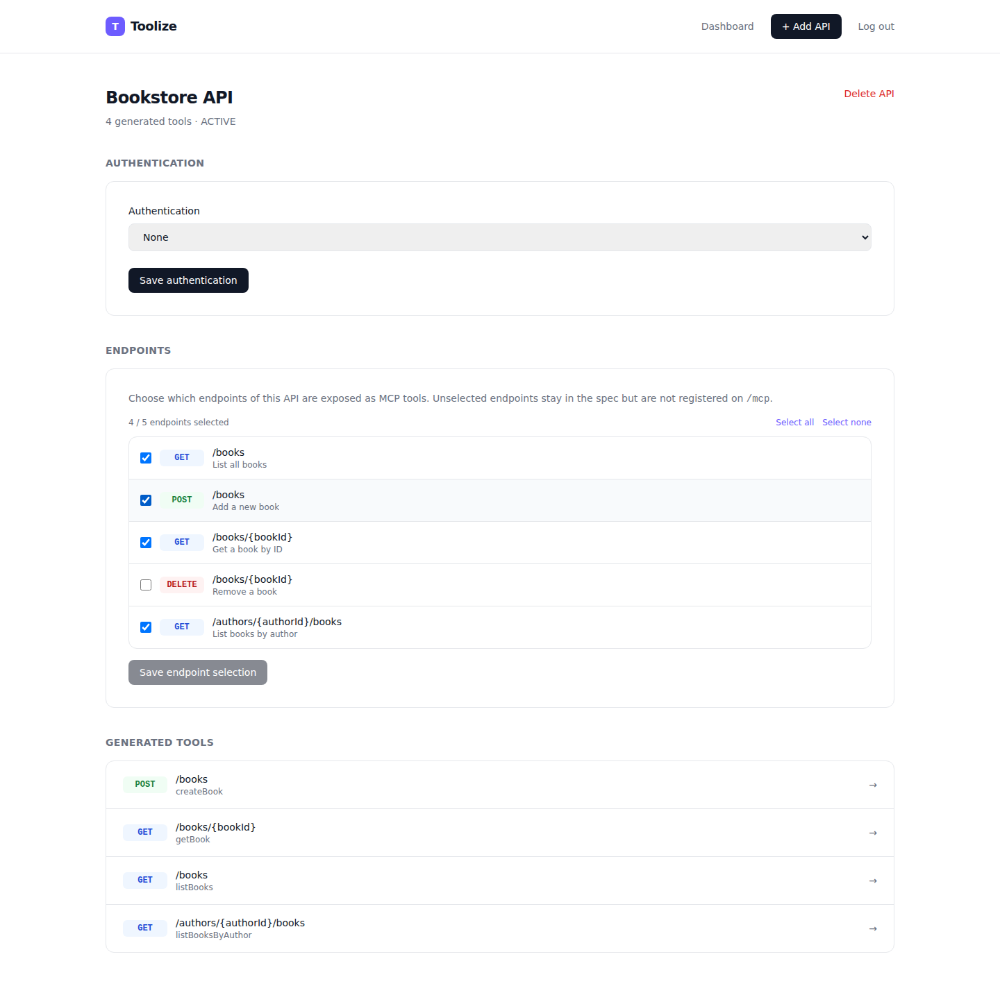
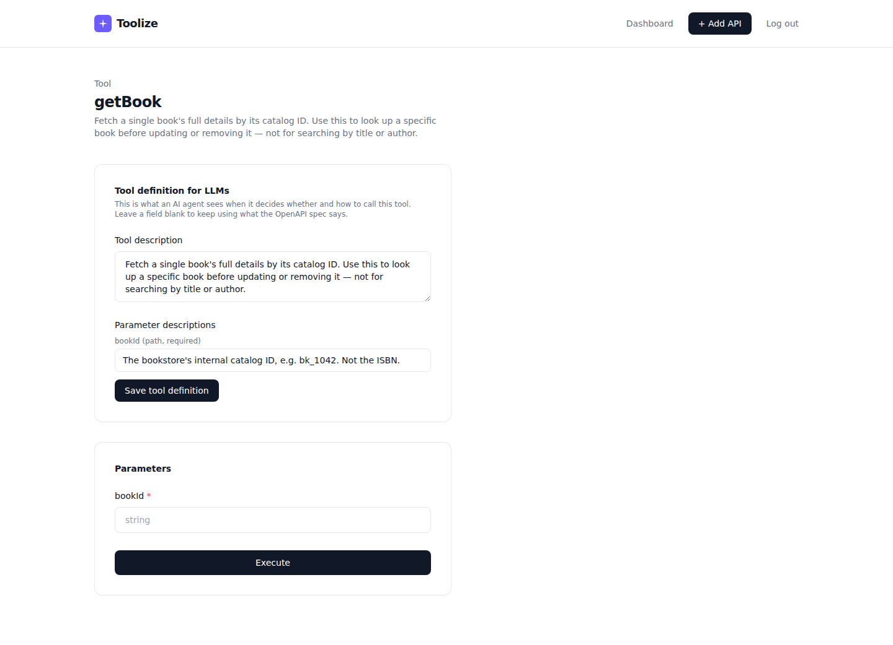
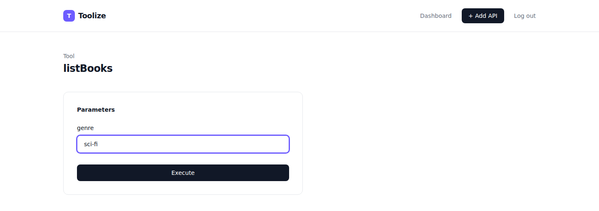

Turn any API into MCP tools, instantly.
Toolize imports an OpenAPI specification and immediately exposes every endpoint as an MCP tool — no code to write, nothing to restart.

How it works
Five steps between an OpenAPI spec and a tool your AI agent can use.
-
1
Import
Paste an OpenAPI/Swagger URL or upload a YAML/JSON file in the Toolize UI.
-
2
Parse
Toolize reads every endpoint, schema, and authentication requirement.
-
3
Select
Pick exactly which endpoints to expose — toggle any of them on or off, any time.
-
4
Generate
Each selected endpoint becomes an MCP tool, served as JSON-RPC 2.0 on
/mcp. -
5
Connect
Point Claude Desktop, Cursor, or any MCP client at that URL.
See it in action
A real import, from spec to callable tool.
Bring your own spec
Paste an OpenAPI URL, or upload a YAML/JSON file directly — Toolize parses every endpoint, schema, and parameter in seconds.

Speaks every security scheme your API does
Toolize reads the spec's declared security scheme and suggests the right authentication automatically — API key, bearer token, basic auth, or OAuth2 client credentials, with Toolize fetching and refreshing its own access token. Stack extra static headers on top for APIs that need more, like a tenant id.

Choose exactly what gets exposed
Not every endpoint should become a tool. Pick which ones to expose right after import — and toggle any of them on or off later from the API page, without re-importing anything.

Every selected endpoint, ready to call
Toolize turns each selected operation into an MCP tool automatically — methods, paths, and parameters included.

Write tool descriptions your agent actually understands
Generated tools start from the spec's own summaries and parameter descriptions —
but specs are written for humans, not agents, and plenty say nothing useful at all.
Rewrite any tool's description or parameter hints straight from its detail page:
when to use it, what a parameter really means, when not to call it. Changes
take effect immediately on /mcp, no re-import required.

Try tools straight from the browser
Every tool gets a generated form from its schema, so you can test a call before wiring up an AI client.

Get started in under a minute
Just one dependency: Docker.
docker pull ghcr.io/kouskous/toolize:latest
docker run -p 8080:8080 -v toolize-data:/data \
-e TOOLIZE_ADMIN_PASSWORD=change-me \
ghcr.io/kouskous/toolize:latest
TOOLIZE_ADMIN_PASSWORD is required — Toolize ships with no default
admin password and refuses to start without one, so a public instance is never
left with a well-known credential.
Then open your browser at:
http://localhost:8080Import an OpenAPI/Swagger spec, and the generated MCP tools are immediately available at:
http://localhost:8080/mcpTrying it out vs. running it in production
The command above is all you need to try Toolize: it stores everything in an embedded database, no setup required. For production, point it at a real database with a few environment variables — no image rebuild, no code change.
docker run -p 8080:8080 -v toolize-data:/data \
-e TOOLIZE_ADMIN_PASSWORD=change-me \
-e TOOLIZE_DB_TYPE=POSTGRESQL \
-e TOOLIZE_DB_HOST=db.example.com \
-e TOOLIZE_DB_PORT=5432 \
-e TOOLIZE_DB_NAME=toolize \
-e TOOLIZE_DB_USERNAME=toolize \
-e TOOLIZE_DB_PASSWORD=change-me \
ghcr.io/kouskous/toolize:latest
TOOLIZE_DB_TYPE also accepts MYSQL and ORACLE —
same variables, same command shape. Plain environment variables also mean every replica
of a scaled deployment (a Kubernetes Secret injected into each pod, for instance) connects
to the same database identically, with nothing tied to any one instance's local disk.